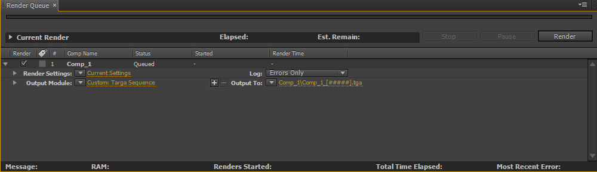
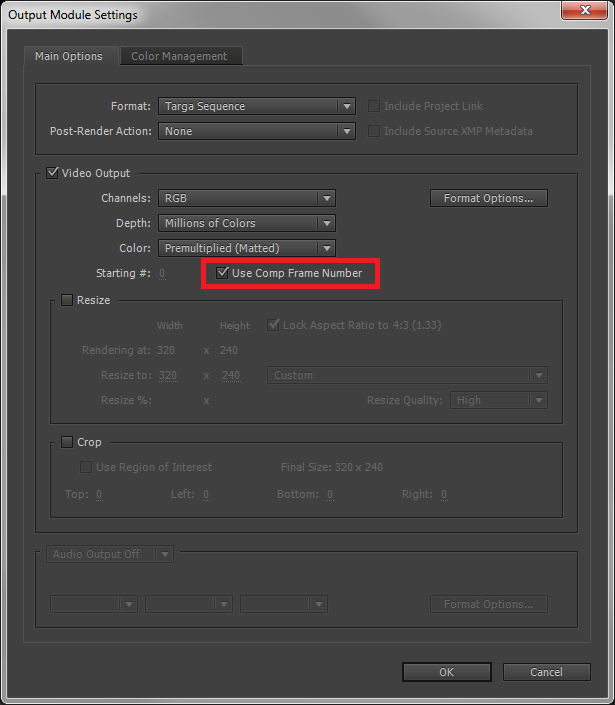
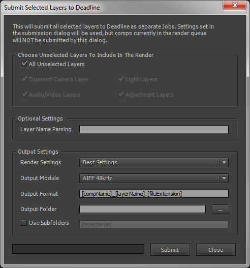
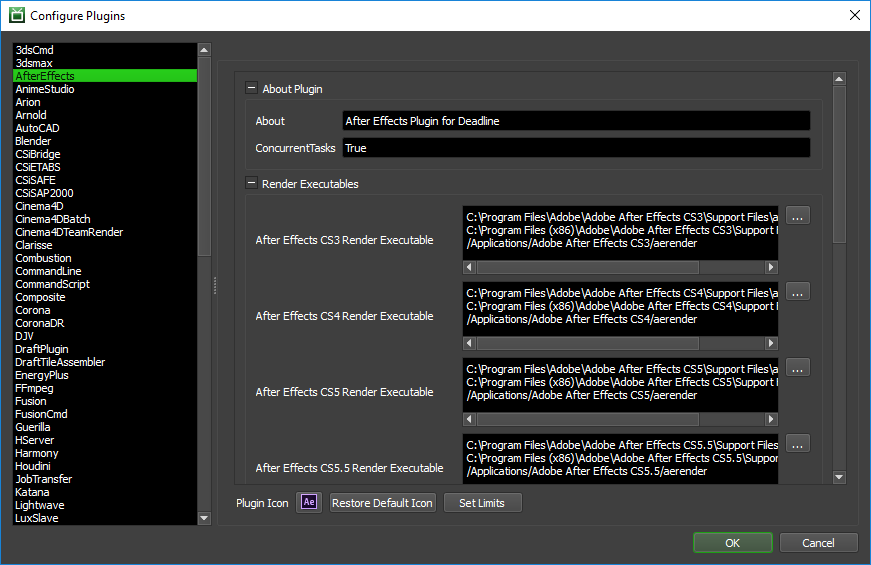
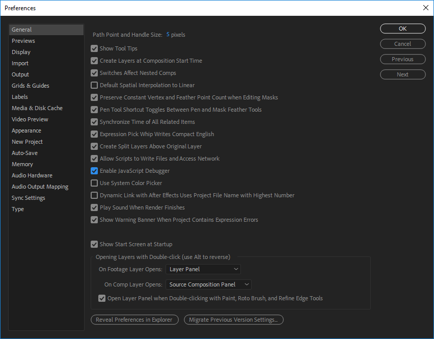
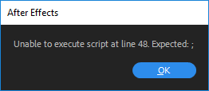

After Effects¶
Warning
Running After Effects as a service can be randomly unreliable. We recommend not running your renderfarm as a service if you depend on AE rendering.
Note
It has come to our attention that After Effects GPU acceleration has been the source of some problems for our clients recently. When using GPU acceleration, ensure that any Worker that can pick up the job has OpenCL or CUDA compliant hardware and drivers installed. Unfortunately, due to the limitations of After Effects, we are unable to modify this setting before rendering and can only warn you/change it on submission.
In the case of headless machines with no GPU capabilities, ensure you select to use Mercury Software Only option in your Project Settings in After Effects before job submission to remove the Deadline printed warning message. GPU rendering while running as a service is NOT supported, so Mercury Software Only option should be used. However, this is dependent on whether the latest graphics drivers or 3rd party GPU accelerated AE plugins are being used as well. After Effects will typically revert to using the CPU for rendering if it is unable to locate any GPU devices.
Job Submission¶
You can submit jobs from within After Effects by installing the integrated submission script, or you can submit them from the Monitor. The instructions for installing the integrated submission script can be found further down this page.
To submit from within After Effects, select File -> Run Script -> DeadlineAfterEffectsClient.jsx.
Project Configuration¶
In After Effects, place the comps you want to render in the Render Queue (CTRL+ALT+0). Due to an issue with the Render Queue, if you have more than one comp with the same name, only the settings from the first one will be used (whether they are checked or not). It is important that all comps in the Render Queue have unique names, and our submission script will notify you if they do not. Each comp that is in the Render Queue and that has a check mark next to it will be submitted as separate job to Deadline.
Note that under the comp’s Output Module settings, the Use Comp Frame Number check box must be checked. If this is not done, every frame in the submitted comp will try to write to the same file.
Submission Options¶
The general Deadline options are explained in the Job Submission documentation, and the Draft/Integration options are explained in the Draft and Integration documentation. Note that the Draft/Integration options are only available in After Effects CS4 and later.
The After Effects specific options are:
Comp Submission: Use this dropdown to specify what type of submission you would prefer.
Select One Comp: Use the Comp Selection dropdown to choose which comp from your queue you would like to submit.
Use Render Queue Selection: This selection will submit all comps from the render queue that are in the queued state.
Submit Entire Render Queue: This selection will submit all comps from the render queue, regardless of their state.
Use Comp Name As Job Name: If enabled, the job’s name will be the Comp name.
Use Frame List From The Comp: Check this option to use the frame range defined for the comp.
Comps Are Dependent On Previous Comps: If enabled, the job for each comp in the render queue will be dependent on the job for the comp ahead of it. This is useful if a comp in the render queue uses footage rendered by a comp ahead of it.
Render The First And Last Frames Of The First: Enable this option to render the first and last frames first, followed by the the remaining frames in the comp’s frame list. Note that this ignores the Frame List setting in the submission dialog.
Submit The Entire Render Queue As One Job With A Single Task: Use this option when the entire render queue needs to be rendered all at once because some queue items are dependent on others or use proxies. Note though that only one machine will be able to work on this job.
Multi-Process Rendering: Enable multi-process rendering.
Submit Project File With Job: If enabled, the After Effects Project File will be submitted with the job.
Ignore Missing Layer Dependencies: If enabled, Deadline will ignore errors due to missing layer dependencies.
Fail On Warning Messages: If enabled, Deadline will fail the job whenever After Effects prints out a warning message.
Export XML Project File: Enable to export the project file as an XML file for Deadline to render (After Effects CS4 and later). The original project file will be restored after submission. If the current project file is already an XML file, this will do nothing.
Delete XML File After Export: If enabled, the exported aepx project file will be automatically deleted after job submission (After Effects CS4 and later). If the current project file is already an XML file, this will do nothing. “Submit Project File With Job” must be enabled for this feature.
Ignore Missing Effects References: If enabled, Deadline will ignore errors due to missing effect references.
Continue On Missing Footage: If enabled, rendering will not stop when missing footage is detected.
Enable Local Rendering: If enabled, Deadline will render the frames locally before copying them over to the final network location.
Override Fail On Existing AE Process: If enabled, the global repository setting “Fail on Existing AE Process” will be overridden.
Fail on Existing AE Process: If enabled, the job will be failed if any After Effects instances are currently running on the Worker. Existing After Effects instances can sometimes cause 3rd party AE plugins to malfunction during network rendering.
Include Output File Path: If enabled, the output path will be included with the job so that it can be changed after the job has been submitted. Note that if your Comp has multiple output modules, you should leave this option disabled.
The following After Effects specific options are only available in After Effects CS4 and later:
Multi-Machine Rendering: This mode submits a special job where each task represents the full frame range. The Workers will all work on the same frame range, but if “Skip existing frames” is enabled for the comps, they will skip frames that other Workers are already rendering.
This mode requires “Skip existing frames” to be enabled for each comp in the Render Queue.
Set the number of tasks to be the number of Workers you want working simultaneously on the render.
This mode ignores the Frame List, Machine Limit, and Frames Per Task settings.
This mode does not support Local Rendering or Output File Checking.
Minimum Output File Size: If an output image’s file size is less than what’s specified in kilobytes (KB), the task is requeued (specify 0 for no limit).
Delete Files Under Minimum File Size: If enabled and the output file size is less than the minimum file size in kilobytes (KB), then the file will be deleted.
Fail On Missing Output: If a job completes and does not produce any output, an error will be produced. This option defaults to on, and is the equivalent to setting the Minimum Output File Size to 1.
Enable Memory Management: Whether or not to use the memory management options.
Image Cache %: The maximum amount of memory after effects will use to cache frames.
Max Memory %: The maximum amount of memory After Effects can use overall.
Pipeline Tools¶
When using the integrated submitter to submit through After Effects you have the ability to use any of the event plugins that you have enabled through the Deadline Monitor. This is done by opening the Pipeline Tools window via the Pipeline Tools button. This window is explained further in the Pipeline Tools documentation.
Layer Submission¶
In addition to normal job submission, you also have the option to submit layers in your After Effects project as separate jobs. To do so, first select the layers you want to submit. Then run the submission script, set the submission options mentioned above as usual, and press the Submit Selected Layers button. This will bring up the layers window.
The layer submission options are:
Render With Unselected Layers: Specify the unselected layers that will render with each of the selected layers.
Layer Name Parsing: Allows you to specify how the layer names should be formatted. You can then grab parts of the formatting and stick them in either the output name or the subfolder format box with square brackets. So, for example, if you’re naming your layers something like
ops024_a_diff, you could put<graphic>_<layer>_<pass>in this box. Then in the subfolder box, you could put[graphic]\\[layer]\\v001\\[pass], which would give youops024\\a\\v001\\diffas the subfolder structure.Render Settings: Which render settings to use.
Output Module: Which output module to use.
Output Format: How the output file name should be formatted.
Output Folder: Where the output files should be rendered to.
Use Subfolders: Enable this to render each layer to its own subfolder. If this is enabled, you must also specify the subfolder format.
Cross-Platform Rendering Considerations¶
In order to perform cross-platform rendering with After Effects, you must setup Mapped Paths so that Deadline can swap out the Project and Output file paths where appropriate. You can access the Mapped Paths Setup in the Monitor while in power user mode by selecting Tools -> Configure Repository. You’ll find the Mapped Paths Setup in the list on the left.
You then have two options on how to set up your After Effects project file. The traditional way is to ensure that your After Effects project file is on a network shared location, and that any footage or assets that the project uses is in the same folder or in sub-folders. Then when you submit the job, you must make sure that the option to submit the project file with the job is disabled. If you leave it enabled, the project file will be copied to and loaded from the Worker’s local machine, and thus won’t be able to find the footage.
You also have the option to save your After Effects project as an AEPX file, which is just an XML file. Deadline will automatically detect that an AEPX file has been submitted, and will swap out paths within the file itself (because it is just plain text). This way, you don’t have to worry about setting up the project structure described in the first option. Note though that all the asset paths still need to be network accessible.
Plugin Configuration¶
You can configure the After Effects plugin settings from the Monitor. While in power user mode, select Tools -> Configure Plugins and select the After Effects plugin from the list on the left.
Render Executables
After Effects Executable: The path to the After Effects aerender executable file used for rendering. Enter alternative paths on separate lines. Different executable paths can be configured for each version installed on your render nodes.
Render Options
Fail On Existing After Effects Process: Prevent Deadline from rendering when After Effects is already open. [Default: False]
Force Rendering In English: You can configure the After Effects plugin to force After Effects to render in English. This is useful if you are rendering with a non-English version of After Effects, because it ensures that Deadline’s progress gathering and error checking function properly (since they are currently based on English output from the After Effects renderer). [Default: False]
Enable Render Engine Mode: If this option is set to true, the Workers will render in Render Engine mode; meaning the Deadline After Effects plugin will automatically create and copy over the required
ae_render_only_node.txtfile which will force After Effects to run in a “non-royalty bearing mode”. Note, this mode disables a few features of AE because of licensing issues. [Default: True]. See this blog post explaining “non-royalty-bearing” mode. Limitations include:Decoding and encoding of MPEG-2 video, including formats based on that: XDCAM EX, XDCAM HD and other formats in MXF OP1a containers, and HDV.
Decoding of AC3 / Dolby Digital audio, which is used in AVHCD media.
You may encounter issues if you are generating a movie file with the above codecs; try a different codec or render to an image sequence. If you are not generating movies, it is likely that you are using a movie with one of these codecs as an input source layer. Consider changing the input movie codec or rendering out to an image sequence and then using this as the input source layer. Note, After Effects loads and renders image sequences faster than it does movie files, so this is the preferred route, assuming you can afford the additional disk space on your file server.
Delete Render Engine File: If this option is set to true, the Workers will remove the Force Engine before rendering and after it is done rendering in Force Engine Mode. [Default: True]
Fail Without Finished Message: If this option is set to true, the Workers will fail any task that does not print the message “Finished composition”. This setting must be set to False to successfully render movie files. [Default: False]
Font Folder Synchronization
The new FontSync event plugin that ships with Deadline v7.1 can be used to synchronize fonts on macOS and Windows before the Worker application starts rendering any job, or when the Worker first starts up. This general FontSync Python based event plugin replaces the font synchronization options here in the After Effects plugin and now works for ALL plugin types in Deadline. This FontSync event plugin is located at <Repository>/events/FontSync
Path Mapping For aepx Project Files (For Mixed Farms)
Enable Path Mapping For aepx Files: If enabled, a temporary aepx file will be created locally on the Worker for rendering and Deadline will do path mapping directly in the aepx file. [Default: True]
Integrated Submission Script Setup¶
The following procedures describe how to install the integrated After Effects submission script. This script allows for submitting After Effects render jobs to Deadline directly from within the After Effects editing GUI. The script and the following installation procedure has been tested with with After Effects CS3 and later.
You can either run the Submitter installer or manually install the submission script.
Submitter Installer¶
Run the Submitter Installer located at
<Repository>/submission/AfterEffects/Installers
Manual Installation¶
Copy the file on Windows:
[Repository]\submission\AfterEffects\Client\DeadlineAfterEffectsClient.jsx to [After Effects Install Directory]\Support Files\Scripts
Alternatively, copy the file on macOS:
[Repository]\submission\AfterEffects\Client\DeadlineAfterEffectsClient.jsx to [After Effects Install Directory]\Scripts
Warning
Ensure you copy the above DeadlineAfterEffectsClient.jsx file to the Scripts directory . Do NOT use the Plugins directory.
For After Effects CC 2019 and later, start the application and make sure that under Edit -> Preferences -> Scripting & Expressions panel, Allow Scripts to Write Files and Access Network option is enabled. This is necessary so that the submission script can create the necessary files to submit to Deadline.
For After Effects CC 2018 and earlier, you can find that option under Edit -> Preferences -> General -> Allow Scripts to Write Files and Access Network.
Custom Sanity Check¶
A CustomSanityChecks.jsx file can be created alongside the main SubmitAEToDeadline.jsx submission script (in [Repository]\submission\AfterEffects\Main), and will be evaluated if it exists. This script will let you set any of the initial properties in the submission script prior to displaying the submission window. You can also use it to run your own checks and display errors or warnings to the user. Here is a very simple example of what this script could look like:
{
initDepartment = "The Best Department";
initPriority = 33;
initConcurrentTasks = 2;
alert( "You are in a custom sanity check!" );
}
Troubleshooting¶
Diagnosing Integrated Submitter Problems¶
Occasionally you may be faced with an issue during job submission. It may be that the submission dialog won’t display or that pressing the “submit” button may not create a job. If you believe you’ve properly installed the integrated submitter as outlined above, it may be time to enable the JavaScript debugger. You’ll find it under Edit -> Preferences:
 After enabling that feature, save your project and restart After Effects. Reload the project and try the submission again to check for an error message. If the problem is not immediately obvious from the error dialog, please reach out to the Thinkbox support team with the contents of the dialog and a test project file if the problem is project specific.
FAQ¶
Which versions of After Effects are supported?
After Effects CS3 and later are supported.
Why is there no Advanced tab in the integrated submission script for After Effects CS3?
Tabs are only supported in CS4 and later, so the Advanced tab and its options are not available in CS3 and earlier.
When rendering an h264 QuickTime on Windows, After Effects exits without rendering any frames
This seems to be an issue with how QuickTime handles many cores (seen with 12). Rendering via the user interface will present the user with “Error: Rendering error while writing to file “<file path>”. Incompatible video compressor. (-1610153448)”. The suggested workaround from Adobe is to use Adobe Media Encoder, but unfortunately AEP(X) files cannot be rendered via the communication method Deadline must use. The best option within Deadline would be to use QuickDraft to automatically generate a video file from the output frames, but as of this writing this method does not support audio.
Does network rendering with After Effects require a full After Effects license?
In After Effects CS5.0 and earlier, a license is not required.
In After Effects CS5.5, a full license is required.
In After Effects CS6.0 and later, a license isn’t required if you enable “non-royalty-bearing” mode. The After Effects plugin configuration section has the option Enable Render Engine Mode to automate this mode on your rendernodes for Windows and macOS machines. Please note the limitations of non-royalty-bearing mode with particular codecs.
Why does After Effects sometimes hang at render completion of a QuickTime mov file?
Due to the requirement to use the “non-royalty-bearing” mode to network render After Effects without requiring an AE license from Adobe, certain codecs are not authorised:
Decoding and encoding of MPEG-2 video, including formats based on that: XDCAM EX, XDCAM HD and other formats in MXF OP1a containers, and HDV.
Decoding of AC3 / Dolby Digital audio, which is used in AVHCD media.
You may encounter issues if you are generating a movie file with the above codecs; try a different codec or render to an image sequence. If you are not generating movies, it is likely that you are using a movie with one of these codecs as an input source layer. Consider changing the input movie codec or rendering out to an image sequence and then using this as the input source layer. Note, After Effects loads and renders image sequences faster than it does movie files, so this is the preferred route, assuming you can afford the additional disk space on your file server.
Rendering through Deadline seems to take longer than rendering through After Effects locally.
After Effects needs to be restarted at the beginning of each frame, and this loading time results in the render taking longer than expected. If you know ahead of time that your frames will render quickly, it is recommended to submit your frames in groups of 5 or 10. This way, After Effects will only load at the beginning of each group of frames, instead of at the beginning of every frame.
When rendering a job, only the images from the first task are saved, and subsequent tasks just seem to overwrite those initial image files.
In the comp’s Output Module Settings, make sure that the “Use Comp Frame Number” checkbox is checked. Check out step 1 here for complete details.
I get the error that the specified comp cannot be found when rendering, but it is in the render queue.
This can occur for a number of reasons, most of which are related to the name of the comp. Examples are names with two spaces next to each other, or names with apostrophes in them. Try using only alphanumeric characters and underscores in comp names and output paths to see if that resolves the issue.
Why do the comps in the After Effects Render Queue require unique names?
Due to an issue with the Render Queue, if you have more than one comp with the same name, only the settings from the first one will be used (whether they are checked or not). It is important that all comps in the Render Queue have unique names, and our submission script will notify you if they do not.
Understanding the different After Effects command line flags.
Adobe have a web page, Automated Rendering which explains the different network render command line options and how they work. Deadline currently supports as many of these options as possible.
How can I optimize After Effects for high performance?
Adobe provide an excellent web page, Memory and Storage documenting different areas of After Effects and what can be done by users to improve performance, particularly in the areas of disk storage/caching & RAM.
I tell Deadline to render still images, but sometimes it renders videos of the still instead.
Unfortunately we have noticed a bug in AE where we see the message “Adding specified comp to Render Queue” and the format is different than was indicated in the command. We are working to add in a way to catch this as an error in a future build, and reaching out to Adobe.
“Use Multi-Process Rendering” is checked as a rendering option but does not work for CC 2015 or later?
As of After Effects CC 2015 some features that were available in previous versions have been removed or disabled by Adobe. One of those features include Rendering Multiple Frames Simultaneously (Multi-Processing). If you want to Render Multiple Frames Simultaneously, you can still do so by using After Effects CC 2014. Adobe explains in this online article the reason behind this behavioral change.
I have expressions in my After Effects project file. Can I use force English mode?
Most expressions written in a non-English project file will not translate over to when rendering in English mode therefore it is not recommended to use English mode when your project contains expressions.
I rendered a job using force English mode and now my After Effects is always using English. How do I disable this mode?
In order to disable the force English mode for after effects you have to remove the text file
ae_force_english.txtthis file can be found in your user documents directory.
I rendered a job using force render engine mode and now my After Effects is not opening any more. How do I disable this mode?
In order to disable the force render engine mode for after effects you can remove the text file
ae_render_only_node.txt. This file can be found in your user documents directory.
How can I disable Adobe Automatic Updates?
Adobe provide instructions here to allow users to create an
AdobeUpdaterAdminPrefs.datfile to disable Adobe auto-updates from occuring at either a machine wide or user account level. We always recommend that all your machines should be running exactly the same version of After Effects for consistency for network rendering.
Error Messages and Meanings¶
This is a collection of known After Effects error messages and their meanings, as well as possible solutions. We want to keep this list as up to date as possible, so if you run into an error message that isn’t listed here, please visit the Thinkbox Help Centre and let us know.
Exception during render: Renderer returned non-zero error code, -1073741819
The error code -1073741819 is equivalent to 0xC0000005, which represents a Memory Access Violation error. So After Effects is either running out of memory, or memory has become corrupt. If you find that your frames are still being rendered, you can modify the After Effects plugin to ignore this error. Just add the following function to the AfterEffectsPlugin class in AfterEffects.py, which can be found in [Repository]/plugins/AfterEffects.
def CheckExitCode(self, exitCode): if self.FailWithoutFinishedMessage: # job marked to fail if no render success message found if not self.RenderSuccess: # no render success message found self.FailRender("After Effects did not report successful render; exit code: %s. Check the render log." % exitCode) else: if exitCode == -1073741819: self.LogInfo("Ignoring exit code -1073741819") elif exitCode != 0: # if exit code non-zero, then fail the job self.FailRender("After Effects returned non-zero error code: %s. Check the render log." % exitCode)You can find another example of the CheckExitCode function in MayaCmd.py, which can be found in [Repository]/plugins/MayaCmd.
aerender ERROR: No comp was found with the given name.
This can occur for a number of reasons, most of which are related to the name of the comp. Examples are names with two spaces next to each other, or names with apostrophes in them. Try using only alphanumeric characters and underscores in comp names and output paths to see if that resolves the issue. Ensure no trailing whitespace characters in each of your comp names.
It is unknown what the exact cause of this error is, but it is likely that After Effects is simply crashing or running out of memory. If you are rendering with Concurrent Tasks set to a value greater than 1, try reducing the number and see if that helps.
The Knoll Light Factory plugin has also been known to cause this error message when it can’t get a license.
CUDA NVAPI Error
Errors like below can occur when After Effects tries to take advantage of GPU acceleration (CUDA specifically), but the Worker doesn’t have a compliant CUDA graphics card installed.
STDOUT: Using DXGI: Device: "Microsoft Basic Render Driver" has dedicated video RAM (MB): 0 STDOUT: has video RAM(MB): 16 STDOUT: [1m[0mOptiX has 1 devices available for use. STDOUT: [1m[31m[1m[ERROR] [0mNVAPI error (C:\code\rtsdk\adobe-ae\cc13.1\src\Util\DriverInfo.cpp:309): STDOUT: [1m[0mNon-default knobs: STDOUT: [1m[0m STDOUT: [1m[31m[1m[ERROR] [0mNVAPI error (C:\code\rtsdk\adobe-ae\cc13.1\src\Util\DriverInfo.cpp:78): STDOUT: [1m[32m[1m[LOG 4] [0mCPU fallback enabled STDOUT: [1m[0mNon-default knobs: STDOUT: [1m[0m STDOUT: [1m[31m[1m[ERROR] [0mNVAPI error (C:\code\rtsdk\adobe-ae\cc13.1\src\Util\DriverInfo.cpp:78):If you receive this error message; to remove it, ensure that all Workers that can render the project have the compliant GPU or change GPU Acceleration Type in the After Effects Project file to use Mercury Software Only. The setting is under: “File” -> “Project Settings…” -> “Video Rendering and Effects” -> “Use:” -> “Mercury Software Only”. A bug report has been logged with Adobe to remove the above exception message from After Effects when network rendering.
GPU rendering while running Deadline Worker as a service is NOT supported, so Mercury Software Only option should be used. However, this is dependent on whether the latest NVIDIA graphics drivers (may support running as a service) or 3rd party GPU accelerated AE plugins (may not work when run as a service due to GUI interaction requirements) are being used as well. After Effects will typically revert to using the CPU for rendering if it is unable to locate any GPU devices, as per the above StdOut line: CPU fallback enabled. Don’t forget you can always use Deadline Groups to categorize the type of CPU or GPU hardware per machine type to control which After Effects jobs render on a particular group of machines.

{kind=link}
{kind=link}
{kind=link}
{kind=link}
{kind=link}
{kind=link}
{kind=link}
{kind=link}
{kind=link}
{kind=link}